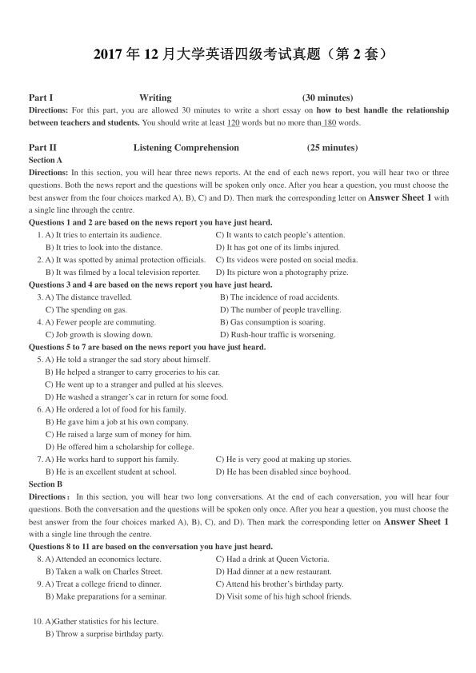
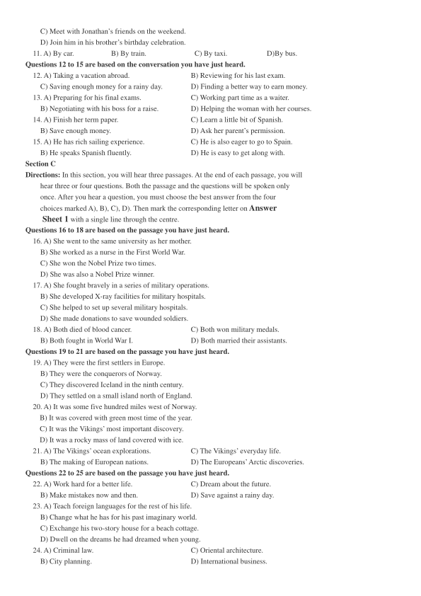
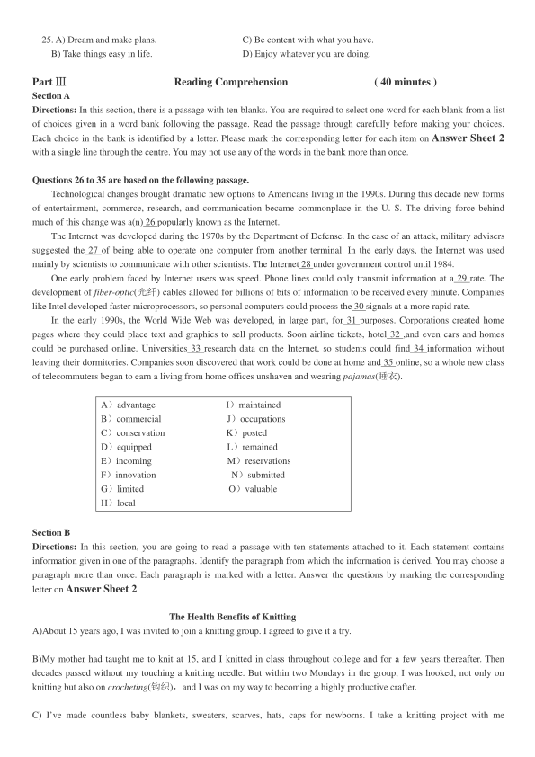
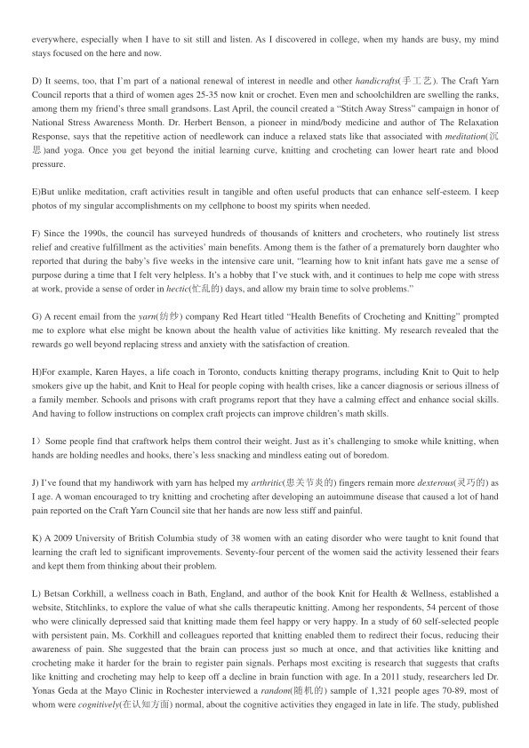
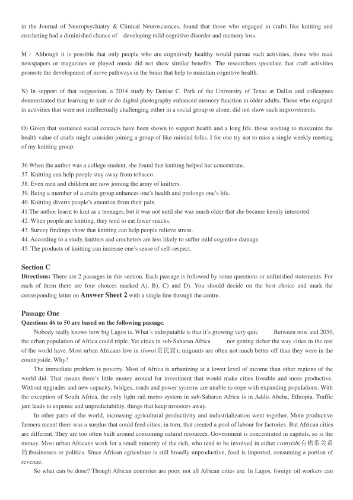
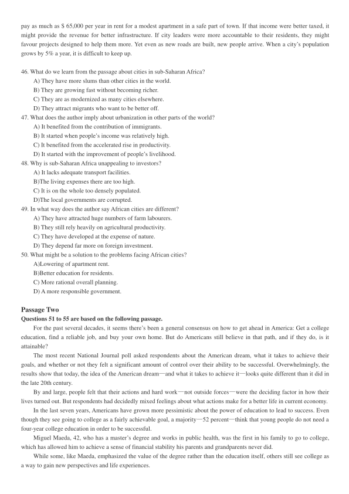
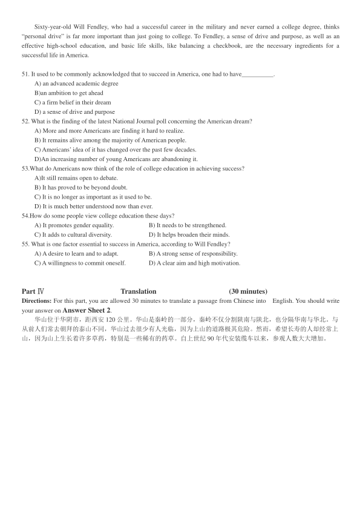

第 1 / 7 页

2017 年12 月大学英语四级考试真题（第2 套）
Part I
Writing
(30 minutes)
Directions: For this part, you are allowed 30 minutes to write a short essay on how to best handle the relationship
between teachers and students. You should write at least 120 words but no more than 180 words.
Part II
Listening Comprehension
(25 minutes)
Section A
Directions: In this section, you will hear three news reports. At the end of each news report, you will hear two or three
questions. Both the news report and the questions will be spoken only once. After you hear a question, you must choose the
best answer from the four choices marked A), B), C) and D). Then mark the corresponding letter on Answer Sheet 1 with
a single line through the centre.
Questions 1 and 2 are based on the news report you have just heard.
1. A) It tries to entertain its audience.
C) It wants to catch people’s attention.
B) It tries to look into the distance.
D) It has got one of its limbs injured.
2. A) It was spotted by animal protection officials.
C) Its videos were posted on social media.
B) It was filmed by a local television reporter.
D) Its picture won a photography prize.
Questions 3 and 4 are based on the news report you have just heard.
3. A) The distance travelled.
B) The incidence of road accidents.
C) The spending on gas.
D) The number of people travelling.
4. A) Fewer people are commuting.
B) Gas consumption is soaring.
C) Job growth is slowing down.
D) Rush-hour traffic is worsening.
Questions 5 to 7 are based on the news report you have just heard.
5. A) He told a stranger the sad story about himself.
B) He helped a stranger to carry groceries to his car.
C) He went up to a stranger and pulled at his sleeves.
D) He washed a stranger’s car in return for some food.
6. A) He ordered a lot of food for his family.
B) He gave him a job at his own company.
C) He raised a large sum of money for him.
D) He offered him a scholarship for college.
7. A) He works hard to support his family.
C) He is very good at making up stories.
B) He is an excellent student at school.
D) He has been disabled since boyhood.
Section B
Directions：In this section, you will hear two long conversations. At the end of each conversation, you will hear four
questions. Both the conversation and the questions will be spoken only once. After you hear a question, you must choose the
best answer from the four choices marked A), B), C), and D). Then mark the corresponding letter on Answer Sheet 1
with a single line through the centre.
Questions 8 to 11 are based on the conversation you have just heard.
8. A) Attended an economics lecture.
C) Had a drink at Queen Victoria.
B) Taken a walk on Charles Street.
D) Had dinner at a new restaurant.
9. A) Treat a college friend to dinner.
C) Attend his brother’s birthday party.
B) Make preparations for a seminar.
D) Visit some of his high school friends.
10. A)Gather statistics for his lecture.
B) Throw a surprise birthday party.
查看 / 复制本页文字
2017 年12 月大学英语四级考试真题（第2 套） Part I Writing (30 minutes) Directions: For this part, you are allowed 30 minutes to write a short essay on how to best handle the relationship between teachers and students. You should write at least 120 words but no more than 180 words. Part II Listening Comprehension (25 minutes) Section A Directions: In this section, you will hear three news reports. At the end of each news report, you will hear two or three questions. Both the news report and the questions will be spoken only once. After you hear a question, you must choose the best answer from the four choices marked A), B), C) and D). Then mark the corresponding letter on Answer Sheet 1 with a single line through the centre. Questions 1 and 2 are based on the news report you have just heard. 1. A) It tries to entertain its audience. C) It wants to catch people’s attention. B) It tries to look into the distance. D) It has got one of its limbs injured. 2. A) It was spotted by animal protection officials. C) Its videos were posted on social media. B) It was filmed by a local television reporter. D) Its picture won a photography prize. Questions 3 and 4 are based on the news report you have just heard. 3. A) The distance travelled. B) The incidence of road accidents. C) The spending on gas. D) The number of people travelling. 4. A) Fewer people are commuting. B) Gas consumption is soaring. C) Job growth is slowing down. D) Rush-hour traffic is worsening. Questions 5 to 7 are based on the news report you have just heard. 5. A) He told a stranger the sad story about himself. B) He helped a stranger to carry groceries to his car. C) He went up to a stranger and pulled at his sleeves. D) He washed a stranger’s car in return for some food. 6. A) He ordered a lot of food for his family. B) He gave him a job at his own company. C) He raised a large sum of money for him. D) He offered him a scholarship for college. 7. A) He works hard to support his family. C) He is very good at making up stories. B) He is an excellent student at school. D) He has been disabled since boyhood. Section B Directions：In this section, you will hear two long conversations. At the end of each conversation, you will hear four questions. Both the conversation and the questions will be spoken only once. After you hear a question, you must choose the best answer from the four choices marked A), B), C), and D). Then mark the corresponding letter on Answer Sheet 1 with a single line through the centre. Questions 8 to 11 are based on the conversation you have just heard. 8. A) Attended an economics lecture. C) Had a drink at Queen Victoria. B) Taken a walk on Charles Street. D) Had dinner at a new restaurant. 9. A) Treat a college friend to dinner. C) Attend his brother’s birthday party. B) Make preparations for a seminar. D) Visit some of his high school friends. 10. A)Gather statistics for his lecture. B) Throw a surprise birthday party.
第 2 / 7 页

C) Meet with Jonathan’s friends on the weekend.
D) Join him in his brother’s birthday celebration.
11. A) By car.
B) By train.
C) By taxi.
D)By bus.
Questions 12 to 15 are based on the conversation you have just heard.
12. A) Taking a vacation abroad.
B) Reviewing for his last exam.
C) Saving enough money for a rainy day.
D) Finding a better way to earn money.
13. A) Preparing for his final exams.
C) Working part time as a waiter.
B) Negotiating with his boss for a raise.
D) Helping the woman with her courses.
14. A) Finish her term paper.
C) Learn a little bit of Spanish.
B) Save enough money.
D) Ask her parent’s permission.
15. A) He has rich sailing experience.
C) He is also eager to go to Spain.
B) He speaks Spanish fluently.
D) He is easy to get along with.
Section C
Directions: In this section, you will hear three passages. At the end of each passage, you will
hear three or four questions. Both the passage and the questions will be spoken only
once. After you hear a question, you must choose the best answer from the four
choices marked A), B), C), D). Then mark the corresponding letter on Answer
Sheet 1 with a single line through the centre.
Questions 16 to 18 are based on the passage you have just heard.
16. A) She went to the same university as her mother.
B) She worked as a nurse in the First World War.
C) She won the Nobel Prize two times.
D) She was also a Nobel Prize winner.
17. A) She fought bravely in a series of military operations.
B) She developed X-ray facilities for military hospitals.
C) She helped to set up several military hospitals.
D) She made donations to save wounded soldiers.
18. A) Both died of blood cancer.
C) Both won military medals.
B) Both fought in World War I.
D) Both married their assistants.
Questions 19 to 21 are based on the passage you have just heard.
19. A) They were the first settlers in Europe.
B) They were the conquerors of Norway.
C) They discovered Iceland in the ninth century.
D) They settled on a small island north of England.
20. A) It was some five hundred miles west of Norway.
B) It was covered with green most time of the year.
C) It was the Vikings’ most important discovery.
D) It was a rocky mass of land covered with ice.
21. A) The Vikings’ ocean explorations.
C) The Vikings’ everyday life.
B) The making of European nations.
D) The Europeans’Arctic discoveries.
Questions 22 to 25 are based on the passage you have just heard.
22. A) Work hard for a better life.
C) Dream about the future.
B) Make mistakes now and then.
D) Save against a rainy day.
23. A) Teach foreign languages for the rest of his life.
B) Change what he has for his past imaginary world.
C) Exchange his two-story house for a beach cottage.
D) Dwell on the dreams he had dreamed when young.
24. A) Criminal law.
C) Oriental architecture.
B) City planning.
D) International business.
查看 / 复制本页文字
C) Meet with Jonathan’s friends on the weekend. D) Join him in his brother’s birthday celebration. 11. A) By car. B) By train. C) By taxi. D)By bus. Questions 12 to 15 are based on the conversation you have just heard. 12. A) Taking a vacation abroad. B) Reviewing for his last exam. C) Saving enough money for a rainy day. D) Finding a better way to earn money. 13. A) Preparing for his final exams. C) Working part time as a waiter. B) Negotiating with his boss for a raise. D) Helping the woman with her courses. 14. A) Finish her term paper. C) Learn a little bit of Spanish. B) Save enough money. D) Ask her parent’s permission. 15. A) He has rich sailing experience. C) He is also eager to go to Spain. B) He speaks Spanish fluently. D) He is easy to get along with. Section C Directions: In this section, you will hear three passages. At the end of each passage, you will hear three or four questions. Both the passage and the questions will be spoken only once. After you hear a question, you must choose the best answer from the four choices marked A), B), C), D). Then mark the corresponding letter on Answer Sheet 1 with a single line through the centre. Questions 16 to 18 are based on the passage you have just heard. 16. A) She went to the same university as her mother. B) She worked as a nurse in the First World War. C) She won the Nobel Prize two times. D) She was also a Nobel Prize winner. 17. A) She fought bravely in a series of military operations. B) She developed X-ray facilities for military hospitals. C) She helped to set up several military hospitals. D) She made donations to save wounded soldiers. 18. A) Both died of blood cancer. C) Both won military medals. B) Both fought in World War I. D) Both married their assistants. Questions 19 to 21 are based on the passage you have just heard. 19. A) They were the first settlers in Europe. B) They were the conquerors of Norway. C) They discovered Iceland in the ninth century. D) They settled on a small island north of England. 20. A) It was some five hundred miles west of Norway. B) It was covered with green most time of the year. C) It was the Vikings’ most important discovery. D) It was a rocky mass of land covered with ice. 21. A) The Vikings’ ocean explorations. C) The Vikings’ everyday life. B) The making of European nations. D) The Europeans’Arctic discoveries. Questions 22 to 25 are based on the passage you have just heard. 22. A) Work hard for a better life. C) Dream about the future. B) Make mistakes now and then. D) Save against a rainy day. 23. A) Teach foreign languages for the rest of his life. B) Change what he has for his past imaginary world. C) Exchange his two-story house for a beach cottage. D) Dwell on the dreams he had dreamed when young. 24. A) Criminal law. C) Oriental architecture. B) City planning. D) International business.
第 3 / 7 页

25. A) Dream and make plans.
C) Be content with what you have.
B) Take things easy in life.
D) Enjoy whatever you are doing.
Part Ⅲ
Reading Comprehension
( 40 minutes )
Section A
Directions: In this section, there is a passage with ten blanks. You are required to select one word for each blank from a list
of choices given in a word bank following the passage. Read the passage through carefully before making your choices.
Each choice in the bank is identified by a letter. Please mark the corresponding letter for each item on Answer Sheet 2
with a single line through the centre. You may not use any of the words in the bank more than once.
Questions 26 to 35 are based on the following passage.
Technological changes brought dramatic new options to Americans living in the 1990s. During this decade new forms
of entertainment, commerce, research, and communication became commonplace in the U. S. The driving force behind
much of this change was a(n) 26 popularly known as the Internet.
The Internet was developed during the 1970s by the Department of Defense. In the case of an attack, military advisers
suggested the 27 of being able to operate one computer from another terminal. In the early days, the Internet was used
mainly by scientists to communicate with other scientists. The Internet 28 under government control until 1984.
One early problem faced by Internet users was speed. Phone lines could only transmit information at a 29 rate. The
development of fiber-optic(光纤) cables allowed for billions of bits of information to be received every minute. Companies
like Intel developed faster microprocessors, so personal computers could process the 30 signals at a more rapid rate.
In the early 1990s, the World Wide Web was developed, in large part, for 31 purposes. Corporations created home
pages where they could place text and graphics to sell products. Soon airline tickets, hotel 32 ,and even cars and homes
could be purchased online. Universities 33 research data on the Internet, so students could find 34 information without
leaving their dormitories. Companies soon discovered that work could be done at home and 35 online, so a whole new class
of telecommuters began to earn a living from home offices unshaven and wearing pajamas(睡衣).
A）advantage
I）maintained
B）commercial
J）occupations
C）conservation
K）posted
D）equipped
L）remained
E）incoming
M）reservations
F）innovation
N）submitted
G）limited
O）valuable
H）local
Section B
Directions: In this section, you are going to read a passage with ten statements attached to it. Each statement contains
information given in one of the paragraphs. Identify the paragraph from which the information is derived. You may choose a
paragraph more than once. Each paragraph is marked with a letter. Answer the questions by marking the corresponding
letter on Answer Sheet 2.
The Health Benefits of Knitting
A)About 15 years ago, I was invited to join a knitting group. I agreed to give it a try.
B)My mother had taught me to knit at 15, and I knitted in class throughout college and for a few years thereafter. Then
decades passed without my touching a knitting needle. But within two Mondays in the group, I was hooked, not only on
knitting but also on crocheting(钩织)，and I was on my way to becoming a highly productive crafter.
C) I’ve made countless baby blankets, sweaters, scarves, hats, caps for newborns. I take a knitting project with me
查看 / 复制本页文字
25. A) Dream and make plans. C) Be content with what you have. B) Take things easy in life. D) Enjoy whatever you are doing. Part Ⅲ Reading Comprehension ( 40 minutes ) Section A Directions: In this section, there is a passage with ten blanks. You are required to select one word for each blank from a list of choices given in a word bank following the passage. Read the passage through carefully before making your choices. Each choice in the bank is identified by a letter. Please mark the corresponding letter for each item on Answer Sheet 2 with a single line through the centre. You may not use any of the words in the bank more than once. Questions 26 to 35 are based on the following passage. Technological changes brought dramatic new options to Americans living in the 1990s. During this decade new forms of entertainment, commerce, research, and communication became commonplace in the U. S. The driving force behind much of this change was a(n) 26 popularly known as the Internet. The Internet was developed during the 1970s by the Department of Defense. In the case of an attack, military advisers suggested the 27 of being able to operate one computer from another terminal. In the early days, the Internet was used mainly by scientists to communicate with other scientists. The Internet 28 under government control until 1984. One early problem faced by Internet users was speed. Phone lines could only transmit information at a 29 rate. The development of fiber-optic(光纤) cables allowed for billions of bits of information to be received every minute. Companies like Intel developed faster microprocessors, so personal computers could process the 30 signals at a more rapid rate. In the early 1990s, the World Wide Web was developed, in large part, for 31 purposes. Corporations created home pages where they could place text and graphics to sell products. Soon airline tickets, hotel 32 ,and even cars and homes could be purchased online. Universities 33 research data on the Internet, so students could find 34 information without leaving their dormitories. Companies soon discovered that work could be done at home and 35 online, so a whole new class of telecommuters began to earn a living from home offices unshaven and wearing pajamas(睡衣). A）advantage I）maintained B）commercial J）occupations C）conservation K）posted D）equipped L）remained E）incoming M）reservations F）innovation N）submitted G）limited O）valuable H）local Section B Directions: In this section, you are going to read a passage with ten statements attached to it. Each statement contains information given in one of the paragraphs. Identify the paragraph from which the information is derived. You may choose a paragraph more than once. Each paragraph is marked with a letter. Answer the questions by marking the corresponding letter on Answer Sheet 2. The Health Benefits of Knitting A)About 15 years ago, I was invited to join a knitting group. I agreed to give it a try. B)My mother had taught me to knit at 15, and I knitted in class throughout college and for a few years thereafter. Then decades passed without my touching a knitting needle. But within two Mondays in the group, I was hooked, not only on knitting but also on crocheting(钩织)，and I was on my way to becoming a highly productive crafter. C) I’ve made countless baby blankets, sweaters, scarves, hats, caps for newborns. I take a knitting project with me
第 4 / 7 页

everywhere, especially when I have to sit still and listen. As I discovered in college, when my hands are busy, my mind
stays focused on the here and now.
D) It seems, too, that I’m part of a national renewal of interest in needle and other handicrafts(手工艺). The Craft Yarn
Council reports that a third of women ages 25-35 now knit or crochet. Even men and schoolchildren are swelling the ranks,
among them my friend’s three small grandsons. Last April, the council created a “Stitch Away Stress” campaign in honor of
National Stress Awareness Month. Dr. Herbert Benson, a pioneer in mind/body medicine and author of The Relaxation
Response, says that the repetitive action of needlework can induce a relaxed stats like that associated with meditation(沉
思)and yoga. Once you get beyond the initial learning curve, knitting and crocheting can lower heart rate and blood
pressure.
E)But unlike meditation, craft activities result in tangible and often useful products that can enhance self-esteem. I keep
photos of my singular accomplishments on my cellphone to boost my spirits when needed.
F) Since the 1990s, the council has surveyed hundreds of thousands of knitters and crocheters, who routinely list stress
relief and creative fulfillment as the activities’ main benefits. Among them is the father of a prematurely born daughter who
reported that during the baby’s five weeks in the intensive care unit, “learning how to knit infant hats gave me a sense of
purpose during a time that I felt very helpless. It’s a hobby that I’ve stuck with, and it continues to help me cope with stress
at work, provide a sense of order in hectic(忙乱的) days, and allow my brain time to solve problems.”
G) A recent email from the yarn(纺纱) company Red Heart titled “Health Benefits of Crocheting and Knitting” prompted
me to explore what else might be known about the health value of activities like knitting. My research revealed that the
rewards go well beyond replacing stress and anxiety with the satisfaction of creation.
H)For example, Karen Hayes, a life coach in Toronto, conducts knitting therapy programs, including Knit to Quit to help
smokers give up the habit, and Knit to Heal for people coping with health crises, like a cancer diagnosis or serious illness of
a family member. Schools and prisons with craft programs report that they have a calming effect and enhance social skills.
And having to follow instructions on complex craft projects can improve children’s math skills.
I）Some people find that craftwork helps them control their weight. Just as it’s challenging to smoke while knitting, when
hands are holding needles and hooks, there’s less snacking and mindless eating out of boredom.
J) I’ve found that my handiwork with yarn has helped my arthritic(患关节炎的) fingers remain more dexterous(灵巧的) as
I age. A woman encouraged to try knitting and crocheting after developing an autoimmune disease that caused a lot of hand
pain reported on the Craft Yarn Council site that her hands are now less stiff and painful.
K) A 2009 University of British Columbia study of 38 women with an eating disorder who were taught to knit found that
learning the craft led to significant improvements. Seventy-four percent of the women said the activity lessened their fears
and kept them from thinking about their problem.
L) Betsan Corkhill, a wellness coach in Bath, England, and author of the book Knit for Health & Wellness, established a
website, Stitchlinks, to explore the value of what she calls therapeutic knitting. Among her respondents, 54 percent of those
who were clinically depressed said that knitting made them feel happy or very happy. In a study of 60 self-selected people
with persistent pain, Ms. Corkhill and colleagues reported that knitting enabled them to redirect their focus, reducing their
awareness of pain. She suggested that the brain can process just so much at once, and that activities like knitting and
crocheting make it harder for the brain to register pain signals. Perhaps most exciting is research that suggests that crafts
like knitting and crocheting may help to keep off a decline in brain function with age. In a 2011 study, researchers led Dr.
Yonas Geda at the Mayo Clinic in Rochester interviewed a random(随机的) sample of 1,321 people ages 70-89, most of
whom were cognitively(在认知方面) normal, about the cognitive activities they engaged in late in life. The study, published
查看 / 复制本页文字
everywhere, especially when I have to sit still and listen. As I discovered in college, when my hands are busy, my mind stays focused on the here and now. D) It seems, too, that I’m part of a national renewal of interest in needle and other handicrafts(手工艺). The Craft Yarn Council reports that a third of women ages 25-35 now knit or crochet. Even men and schoolchildren are swelling the ranks, among them my friend’s three small grandsons. Last April, the council created a “Stitch Away Stress” campaign in honor of National Stress Awareness Month. Dr. Herbert Benson, a pioneer in mind/body medicine and author of The Relaxation Response, says that the repetitive action of needlework can induce a relaxed stats like that associated with meditation(沉 思)and yoga. Once you get beyond the initial learning curve, knitting and crocheting can lower heart rate and blood pressure. E)But unlike meditation, craft activities result in tangible and often useful products that can enhance self-esteem. I keep photos of my singular accomplishments on my cellphone to boost my spirits when needed. F) Since the 1990s, the council has surveyed hundreds of thousands of knitters and crocheters, who routinely list stress relief and creative fulfillment as the activities’ main benefits. Among them is the father of a prematurely born daughter who reported that during the baby’s five weeks in the intensive care unit, “learning how to knit infant hats gave me a sense of purpose during a time that I felt very helpless. It’s a hobby that I’ve stuck with, and it continues to help me cope with stress at work, provide a sense of order in hectic(忙乱的) days, and allow my brain time to solve problems.” G) A recent email from the yarn(纺纱) company Red Heart titled “Health Benefits of Crocheting and Knitting” prompted me to explore what else might be known about the health value of activities like knitting. My research revealed that the rewards go well beyond replacing stress and anxiety with the satisfaction of creation. H)For example, Karen Hayes, a life coach in Toronto, conducts knitting therapy programs, including Knit to Quit to help smokers give up the habit, and Knit to Heal for people coping with health crises, like a cancer diagnosis or serious illness of a family member. Schools and prisons with craft programs report that they have a calming effect and enhance social skills. And having to follow instructions on complex craft projects can improve children’s math skills. I）Some people find that craftwork helps them control their weight. Just as it’s challenging to smoke while knitting, when hands are holding needles and hooks, there’s less snacking and mindless eating out of boredom. J) I’ve found that my handiwork with yarn has helped my arthritic(患关节炎的) fingers remain more dexterous(灵巧的) as I age. A woman encouraged to try knitting and crocheting after developing an autoimmune disease that caused a lot of hand pain reported on the Craft Yarn Council site that her hands are now less stiff and painful. K) A 2009 University of British Columbia study of 38 women with an eating disorder who were taught to knit found that learning the craft led to significant improvements. Seventy-four percent of the women said the activity lessened their fears and kept them from thinking about their problem. L) Betsan Corkhill, a wellness coach in Bath, England, and author of the book Knit for Health & Wellness, established a website, Stitchlinks, to explore the value of what she calls therapeutic knitting. Among her respondents, 54 percent of those who were clinically depressed said that knitting made them feel happy or very happy. In a study of 60 self-selected people with persistent pain, Ms. Corkhill and colleagues reported that knitting enabled them to redirect their focus, reducing their awareness of pain. She suggested that the brain can process just so much at once, and that activities like knitting and crocheting make it harder for the brain to register pain signals. Perhaps most exciting is research that suggests that crafts like knitting and crocheting may help to keep off a decline in brain function with age. In a 2011 study, researchers led Dr. Yonas Geda at the Mayo Clinic in Rochester interviewed a random(随机的) sample of 1,321 people ages 70-89, most of whom were cognitively(在认知方面) normal, about the cognitive activities they engaged in late in life. The study, published
第 5 / 7 页

in the Journal of Neuropsychiatry & Clinical Neurosciences, found that those who engaged in crafts like knitting and
crocheting had a diminished chance of
developing mild cognitive disorder and memory loss.
M ）Although it is possible that only people who are cognitively healthy would pursue such activities, those who read
newspapers or magazines or played music did not show similar benefits. The researchers speculate that craft activities
promote the development of nerve pathways in the brain that help to maintain cognitive health.
N) In support of that suggestion, a 2014 study by Denise C. Park of the University of Texas at Dallas and colleagues
demonstrated that learning to knit or do digital photography enhanced memory function in older adults. Those who engaged
in activities that were not intellectually challenging either in a social group or alone, did not show such improvements.
O) Given that sustained social contacts have been shown to support health and a long life, those wishing to maximize the
health value of crafts might consider joining a group of like-minded folks. I for one try not to miss a single weekly meeting
of my knitting group.
36.When the author was a college student, she found that knitting helped her concentrate.
37. Knitting can help people stay away from tobacco.
38. Even men and children are now joining the army of knitters.
39. Being a member of a crafts group enhances one’s health and prolongs one’s life.
40. Knitting diverts people’s attention from their pain.
41.The author learnt to knit as a teenager, but it was not until she was much older that she became keenly interested.
42. When people are knitting, they tend to eat fewer snacks.
43. Survey findings show that knitting can help people relieve stress.
44. According to a study, knitters and crocheters are less likely to suffer mild cognitive damage.
45. The products of knitting can increase one’s sense of self-respect.
Section C
Directions: There are 2 passages in this section. Each passage is followed by some questions or unfinished statements. For
each of them there are four choices marked A), B), C) and D). You should decide on the best choice and mark the
corresponding letter on Answer Sheet 2 with a single line through the centre.
Passage One
Questions 46 to 50 are based on the following passage.
Nobody really knows how big Lagos is. What’s indisputable is that it’s growing very quic
Between now and 2050,
the urban population of Africa could triple. Yet cities in sub-Saharan Africa
not getting richer the way cities in the rest
of the world have. Most urban Africans live in slums(贫民窟); migrants are often not much better off than they were in the
countryside. Why?
The immediate problem is poverty. Most of Africa is urbanizing at a lower level of income than other regions of the
world did. That means there’s little money around for investment that would make cities liveable and more productive.
Without upgrades and new capacity, bridges, roads and power systems are unable to cope with expanding populations. With
the exception of South Africa, the only light rail metro system in sub-Saharan Africa is in Addis Ababa, Ethiopia. Traffic
jam leads to expense and unpredictability, things that keep investors away.
In other parts of the world, increasing agricultural productivity and industrialization went together. More productive
farmers meant there was a surplus that could feed cities; in turn, that created a pool of labour for factories. But African cities
are different. They are too often built around consuming natural resources. Government is concentrated in capitals, so is the
money. Most urban Africans work for a small minority of the rich, who tend to be involved in either cronyish(有裙带关系
的)businesses or politics. Since African agriculture is still broadly unproductive, food is imported, consuming a portion of
revenue.
So what can be done? Though African countries are poor, not all African cities are. In Lagos, foreign oil workers can
查看 / 复制本页文字
in the Journal of Neuropsychiatry & Clinical Neurosciences, found that those who engaged in crafts like knitting and crocheting had a diminished chance of developing mild cognitive disorder and memory loss. M ）Although it is possible that only people who are cognitively healthy would pursue such activities, those who read newspapers or magazines or played music did not show similar benefits. The researchers speculate that craft activities promote the development of nerve pathways in the brain that help to maintain cognitive health. N) In support of that suggestion, a 2014 study by Denise C. Park of the University of Texas at Dallas and colleagues demonstrated that learning to knit or do digital photography enhanced memory function in older adults. Those who engaged in activities that were not intellectually challenging either in a social group or alone, did not show such improvements. O) Given that sustained social contacts have been shown to support health and a long life, those wishing to maximize the health value of crafts might consider joining a group of like-minded folks. I for one try not to miss a single weekly meeting of my knitting group. 36.When the author was a college student, she found that knitting helped her concentrate. 37. Knitting can help people stay away from tobacco. 38. Even men and children are now joining the army of knitters. 39. Being a member of a crafts group enhances one’s health and prolongs one’s life. 40. Knitting diverts people’s attention from their pain. 41.The author learnt to knit as a teenager, but it was not until she was much older that she became keenly interested. 42. When people are knitting, they tend to eat fewer snacks. 43. Survey findings show that knitting can help people relieve stress. 44. According to a study, knitters and crocheters are less likely to suffer mild cognitive damage. 45. The products of knitting can increase one’s sense of self-respect. Section C Directions: There are 2 passages in this section. Each passage is followed by some questions or unfinished statements. For each of them there are four choices marked A), B), C) and D). You should decide on the best choice and mark the corresponding letter on Answer Sheet 2 with a single line through the centre. Passage One Questions 46 to 50 are based on the following passage. Nobody really knows how big Lagos is. What’s indisputable is that it’s growing very quic Between now and 2050, the urban population of Africa could triple. Yet cities in sub-Saharan Africa not getting richer the way cities in the rest of the world have. Most urban Africans live in slums(贫民窟); migrants are often not much better off than they were in the countryside. Why? The immediate problem is poverty. Most of Africa is urbanizing at a lower level of income than other regions of the world did. That means there’s little money around for investment that would make cities liveable and more productive. Without upgrades and new capacity, bridges, roads and power systems are unable to cope with expanding populations. With the exception of South Africa, the only light rail metro system in sub-Saharan Africa is in Addis Ababa, Ethiopia. Traffic jam leads to expense and unpredictability, things that keep investors away. In other parts of the world, increasing agricultural productivity and industrialization went together. More productive farmers meant there was a surplus that could feed cities; in turn, that created a pool of labour for factories. But African cities are different. They are too often built around consuming natural resources. Government is concentrated in capitals, so is the money. Most urban Africans work for a small minority of the rich, who tend to be involved in either cronyish(有裙带关系 的)businesses or politics. Since African agriculture is still broadly unproductive, food is imported, consuming a portion of revenue. So what can be done? Though African countries are poor, not all African cities are. In Lagos, foreign oil workers can
第 6 / 7 页

pay as much as $ 65,000 per year in rent for a modest apartment in a safe part of town. If that income were better taxed, it
might provide the revenue for better infrastructure. If city leaders were more accountable to their residents, they might
favour projects designed to help them more. Yet even as new roads are built, new people arrive. When a city’s population
grows by 5% a year, it is difficult to keep up.
46. What do we learn from the passage about cities in sub-Saharan Africa?
A) They have more slums than other cities in the world.
B) They are growing fast without becoming richer.
C) They are as modernized as many cities elsewhere.
D) They attract migrants who want to be better off.
47. What does the author imply about urbanization in other parts of the world?
A) It benefited from the contribution of immigrants.
B) It started when people’s income was relatively high.
C) It benefited from the accelerated rise in productivity.
D) It started with the improvement of people’s livelihood.
48. Why is sub-Saharan Africa unappealing to investors?
A) It lacks adequate transport facilities.
B)The living expenses there are too high.
C) It is on the whole too densely populated.
D)The local governments are corrupted.
49. In what way does the author say African cities are different?
A) They have attracted huge numbers of farm labourers.
B) They still rely heavily on agricultural productivity.
C) They have developed at the expense of nature.
D) They depend far more on foreign investment.
50. What might be a solution to the problems facing African cities?
A)Lowering of apartment rent.
B)Better education for residents.
C) More rational overall planning.
D) A more responsible government.
Passage Two
Questions 51 to 55 are based on the following passage.
For the past several decades, it seems there’s been a general consensus on how to get ahead in America: Get a college
education, find a reliable job, and buy your own home. But do Americans still believe in that path, and if they do, is it
attainable?
The most recent National Journal poll asked respondents about the American dream, what it takes to achieve their
goals, and whether or not they felt a significant amount of control over their ability to be successful. Overwhelmingly, the
results show that today, the idea of the American dream—and what it takes to achieve it—looks quite different than it did in
the late 20th century.
By and large, people felt that their actions and hard work—not outside forces—were the deciding factor in how their
lives turned out. But respondents had decidedly mixed feelings about what actions make for a better life in current economy.
In the last seven years, Americans have grown more pessimistic about the power of education to lead to success. Even
though they see going to college as a fairly achievable goal, a majority—52 percent—think that young people do not need a
four-year college education in order to be successful.
Miguel Maeda, 42, who has a master’s degree and works in public health, was the first in his family to go to college,
which has allowed him to achieve a sense of financial stability his parents and grandparents never did.
While some, like Maeda, emphasized the value of the degree rather than the education itself, others still see college as
a way to gain new perspectives and life experiences.
查看 / 复制本页文字
pay as much as $ 65,000 per year in rent for a modest apartment in a safe part of town. If that income were better taxed, it might provide the revenue for better infrastructure. If city leaders were more accountable to their residents, they might favour projects designed to help them more. Yet even as new roads are built, new people arrive. When a city’s population grows by 5% a year, it is difficult to keep up. 46. What do we learn from the passage about cities in sub-Saharan Africa? A) They have more slums than other cities in the world. B) They are growing fast without becoming richer. C) They are as modernized as many cities elsewhere. D) They attract migrants who want to be better off. 47. What does the author imply about urbanization in other parts of the world? A) It benefited from the contribution of immigrants. B) It started when people’s income was relatively high. C) It benefited from the accelerated rise in productivity. D) It started with the improvement of people’s livelihood. 48. Why is sub-Saharan Africa unappealing to investors? A) It lacks adequate transport facilities. B)The living expenses there are too high. C) It is on the whole too densely populated. D)The local governments are corrupted. 49. In what way does the author say African cities are different? A) They have attracted huge numbers of farm labourers. B) They still rely heavily on agricultural productivity. C) They have developed at the expense of nature. D) They depend far more on foreign investment. 50. What might be a solution to the problems facing African cities? A)Lowering of apartment rent. B)Better education for residents. C) More rational overall planning. D) A more responsible government. Passage Two Questions 51 to 55 are based on the following passage. For the past several decades, it seems there’s been a general consensus on how to get ahead in America: Get a college education, find a reliable job, and buy your own home. But do Americans still believe in that path, and if they do, is it attainable? The most recent National Journal poll asked respondents about the American dream, what it takes to achieve their goals, and whether or not they felt a significant amount of control over their ability to be successful. Overwhelmingly, the results show that today, the idea of the American dream—and what it takes to achieve it—looks quite different than it did in the late 20th century. By and large, people felt that their actions and hard work—not outside forces—were the deciding factor in how their lives turned out. But respondents had decidedly mixed feelings about what actions make for a better life in current economy. In the last seven years, Americans have grown more pessimistic about the power of education to lead to success. Even though they see going to college as a fairly achievable goal, a majority—52 percent—think that young people do not need a four-year college education in order to be successful. Miguel Maeda, 42, who has a master’s degree and works in public health, was the first in his family to go to college, which has allowed him to achieve a sense of financial stability his parents and grandparents never did. While some, like Maeda, emphasized the value of the degree rather than the education itself, others still see college as a way to gain new perspectives and life experiences.
第 7 / 7 页

Sixty-year-old Will Fendley, who had a successful career in the military and never earned a college degree, thinks
“personal drive” is far more important than just going to college. To Fendley, a sense of drive and purpose, as well as an
effective high-school education, and basic life skills, like balancing a checkbook, are the necessary ingredients for a
successful life in America.
51. It used to be commonly acknowledged that to succeed in America, one had to have
.
A) an advanced academic degree
B)an ambition to get ahead
C) a firm belief in their dream
D) a sense of drive and purpose
52. What is the finding of the latest National Journal poll concerning the American dream?
A) More and more Americans are finding it hard to realize.
B) It remains alive among the majority of American people.
C) Americans’ idea of it has changed over the past few decades.
D)An increasing number of young Americans are abandoning it.
53.What do Americans now think of the role of college education in achieving success?
A)It still remains open to debate.
B) It has proved to be beyond doubt.
C) It is no longer as important as it used to be.
D) It is much better understood now than ever.
54.How do some people view college education these days?
A) It promotes gender equality.
B) It needs to be strengthened.
C) It adds to cultural diversity.
D) It helps broaden their minds.
55. What is one factor essential to success in America, according to Will Fendley?
A) A desire to learn and to adapt.
B) A strong sense of responsibility.
C) A willingness to commit oneself.
D) A clear aim and high motivation.
Part Ⅳ
Translation
(30 minutes)
Directions: For this part, you are allowed 30 minutes to translate a passage from Chinese into
English. You should write
your answer on Answer Sheet 2.
华山位于华阴市，距西安120 公里。华山是秦岭的一部分，秦岭不仅分割陕南与陕北，也分隔华南与华北。与
从前人们常去朝拜的泰山不同，华山过去很少有人光临，因为上山的道路极其危险。然而，希望长寿的人却经常上
山，因为山上生长着许多草药，特别是一些稀有的药草。自上世纪90 年代安装缆车以来，参观人数大大增加。
查看 / 复制本页文字
Sixty-year-old Will Fendley, who had a successful career in the military and never earned a college degree, thinks “personal drive” is far more important than just going to college. To Fendley, a sense of drive and purpose, as well as an effective high-school education, and basic life skills, like balancing a checkbook, are the necessary ingredients for a successful life in America. 51. It used to be commonly acknowledged that to succeed in America, one had to have . A) an advanced academic degree B)an ambition to get ahead C) a firm belief in their dream D) a sense of drive and purpose 52. What is the finding of the latest National Journal poll concerning the American dream? A) More and more Americans are finding it hard to realize. B) It remains alive among the majority of American people. C) Americans’ idea of it has changed over the past few decades. D)An increasing number of young Americans are abandoning it. 53.What do Americans now think of the role of college education in achieving success? A)It still remains open to debate. B) It has proved to be beyond doubt. C) It is no longer as important as it used to be. D) It is much better understood now than ever. 54.How do some people view college education these days? A) It promotes gender equality. B) It needs to be strengthened. C) It adds to cultural diversity. D) It helps broaden their minds. 55. What is one factor essential to success in America, according to Will Fendley? A) A desire to learn and to adapt. B) A strong sense of responsibility. C) A willingness to commit oneself. D) A clear aim and high motivation. Part Ⅳ Translation (30 minutes) Directions: For this part, you are allowed 30 minutes to translate a passage from Chinese into English. You should write your answer on Answer Sheet 2. 华山位于华阴市，距西安120 公里。华山是秦岭的一部分，秦岭不仅分割陕南与陕北，也分隔华南与华北。与 从前人们常去朝拜的泰山不同，华山过去很少有人光临，因为上山的道路极其危险。然而，希望长寿的人却经常上 山，因为山上生长着许多草药，特别是一些稀有的药草。自上世纪90 年代安装缆车以来，参观人数大大增加。